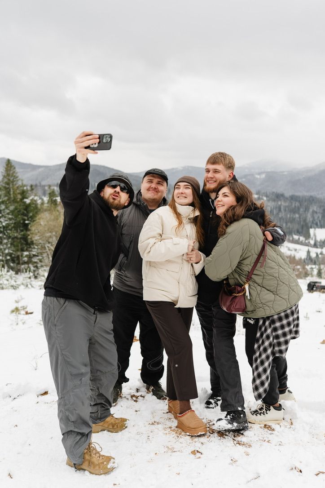
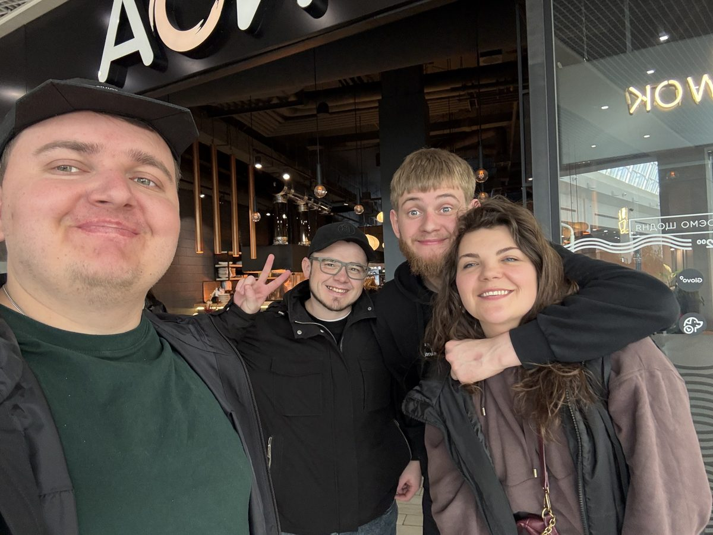

Світло крізь
темряву
Light Through
Darkness
Служіння ветеранам. Україна. Veterans Ministry. Ukraine.
Привіт, дорога молитовна родино! Останній час видався для мене неймовірно насиченим, але водночас глибоким місяцем. Я мав можливість долучитися до різних команд та взяти участь у проведені двох ретритів.
Мені бувало складно комунікувати з людьми через внутрішню апатію, але я неймовірно радий, що Бог продовжує діяти через мене попри всі мої людські слабкості. Господь розвертає ці складні моменти на добро: мені стало легше розуміти хлопців, які проходять схожі випробування.
Greetings, dear prayer family! The recent period has been incredibly busy, yet a deeply profound month for me. I had the opportunity to join various teams and participate in hosting two retreats.
It was sometimes difficult for me to communicate with people due to internal apathy, but I am incredibly glad that God continues to work through me despite all my human weaknesses. The Lord turns these difficult moments into good: it has become easier for me to understand the guys who are going through similar trials.
«Але Він сказав мені: "Досить тобі Моєї благодаті, бо сила Моя здійснюється в немочі". Тому я охоче буду хвалитися своїми немочами, щоб у мені оселилася сила Христова». "But he said to me, 'My grace is sufficient for you, for my power is made perfect in weakness.' Therefore I will boast all the more gladly about my weaknesses, so that Christ’s power may rest on me." — 2 до Коринтян 12:9 — 2 Corinthians 12:9

Час для відновлення 🏔️ Time for restoration 🏔️
Це був безцінний час тиші та молитви у зимових горах. Він дозволив мені відновити сили та почути Божий голос перед наступним сезоном нашого служіння. It was an invaluable time of silence and prayer in the winter mountains. It allowed me to restore my strength and hear God's voice before the next season of our ministry.
Відповіді на молитви та історії служіння Answered Prayers and Ministry Stories
Біль подруги та криза віри A Friend's Pain and Crisis of Faith

Хочу поділитися з вами історією моєї подруги Ані. Вона переживає важку кризу в житті та кризу віри. Аня — дружина військового. Її перший чоловік загинув на цій війні, а теперішній чоловік зараз також служить на фронті. Через увесь цей біль вона не може знайти себе, не розуміє, куди рухатися далі, і, що найболючіше, поки не бачить у цьому Бога.
Я намагаюся підтримувати її як друг. Нам вдалося знайти для неї кваліфікованих психотерапевта та психіатра. Зараз Аня розпочала лікування, і наше спілкування перейшло на глибший, духовний рівень. Вона починає шукати Бога в усьому цьому, і я бачу перші промінчики покращення.
I want to share with you the story of my friend Anya. She is experiencing a severe life crisis and a crisis of faith. Anya is the wife of a soldier. Her first husband died in this war, and her current husband is now also serving at the front. Through all this pain, she cannot find herself, doesn't understand where to move next, and, most painfully, doesn't yet see God in this.
I try to support her as a friend. We managed to find qualified psychotherapists and psychiatrists for her. Now Anya has started treatment, and our communication has moved to a deeper, spiritual level. She is starting to look for God in all of this, and I see the first rays of improvement.
«Близький Господь до зламаних серцем, і впокорених духом спасає... Він зцілює зламаних серцем, і перев'язує їхні рани». "The Lord is close to the brokenhearted and saves those who are crushed in spirit... He heals the brokenhearted and binds up their wounds." — Псалом 34:18 / Псалом 147:3 — Psalm 34:18 / Psalm 147:3
Прошу вас молитися за її повне емоційне та духовне відновлення. I ask you to pray for her complete emotional and spiritual recovery.
Ретрит у Будапешті: коли двоє варті великих зусиль Retreat in Budapest: When Two Are Worth the Effort

Наш другий ретрит для ветеранів проходив у Будапешті. На жаль, через життєві обставини з шести запланованих учасників змогли поїхати лише двоє хлопців. У нас були великі сумніви: чи доречно проводити ретрит для такої малої кількості людей? До того ж дорогою виникало безліч перешкод.
Але Бог вкотре довів, що Він діє там, де важко. Цей ретрит пройшов чудово. Ми мали дуже глибокі розмови, відвідали багато гарних місць. Найціннішим було почути від хлопців, що тут вони нарешті відчули той самий спокій з минулого життя — де не треба нікуди бігти, не тисне війна, і можна почуватися безпечно та комфортно серед своїх.
Our second retreat for veterans took place in Budapest. Unfortunately, due to life circumstances, out of six planned participants, only two guys could go. We had big doubts: is it appropriate to hold a retreat for such a small number of people? Plus, there were many obstacles along the way.
But God once again proved that He works where it is hard. This retreat went wonderfully. We had very deep conversations and visited many beautiful places. The most valuable thing was to hear from the guys that here they finally felt that same peace from their past life — where you don't have to run anywhere, the war doesn't press on you, and you can feel safe and comfortable among friends.
«Мир залишаю вам, Мій мир даю вам; не так, як світ дає, Я даю вам. Нехай не тривожиться серце ваше і не лякається». "Peace I leave with you; my peace I give you. I do not give to you as the world gives. Do not let your hearts be troubled and do not be afraid." — Від Івана 14:27 — John 14:27
Новини від Даніка News from Danik

Особливо мене вразила історія Даніка. Він потрапив на війну в 19 років. У перших же боях їхню колону розбили, і хлопець опинився в полоні. Він пробув там 2 місяці, пройшовши через тюрми. У нього була ампутована кисть руки та обморожені ноги, але попри ці жахи, Данік виявляв неймовірну мужність — він піклувався про інших полонених і намагався дістати їжу для товаришів.
Слухаючи його, я дивувався цій залізній стійкості й думав, що мені до нього далеко. Проте в особистій розмові Данік зізнався, що теж переживає дуже складні періоди в духовному та емоційному стані, але не складає рук і рухається далі.
Данік — не церковна людина, але Бог оточив його християнами. Дорогою назад ми багато спілкувалися. Він поділився, що йому дуже близька ідея християнства, жертва Христа та Божі заповіді, хоча через певні упередження він поки не відносить себе до жодної спільноти. Данік почав молитися після полону, щоб Бог керував його життям.
I was particularly struck by Danik's story. He went to war at the age of 19. In the very first battles, their column was destroyed, and the boy ended up in captivity. He spent 2 months there, going through prisons. He had his hand amputated and feet frostbitten, but despite these horrors, Danik showed incredible courage — he cared for other prisoners and tried to get food for his comrades.
Listening to him, I marveled at this iron resilience and thought that I am far from his level. However, in a personal conversation, Danik admitted that he also goes through very difficult periods in his spiritual and emotional state, but he does not give up and moves forward.
Danik is not a churchgoer, but God surrounded him with Christians. On the way back, we talked a lot. He shared that the idea of Christianity, the sacrifice of Christ, and God's commandments are very close to his heart, although due to certain prejudices he does not yet associate himself with any community. Danik started praying after captivity, asking God to guide his life.
«Щоб Бога шукали вони, чи не помацають Його та не знайдуть, хоч Він і недалеко від кожного з нас». "God did this so that they would seek him and perhaps reach out for him and find him, though he is not far from any one of us." — Дії Апостолів 17:27 — Acts 17:27
Будь ласка, моліться за покаяння Даніка — це неймовірна людина, яку Бог дуже любить і чекає у Своїй родині. Please pray for Danik's repentance — he is an incredible person whom God loves very much and is waiting for in His family.
Подкасти, які відгукуються Podcasts that Resonate
Також цього місяця ми записали два важливих подкасти. Один із них — із заступником єпископа, у якого на війні загинув зять. Спікер дуже відкрито, зі сльозами на очах ділився цим етапом свого життя.
Після виходу епізоду ми отримали чимало повідомлень про те, як сильно це відгукнулося людям. З одного боку, прикро, що так багато українців зараз переживають цей страшний біль втрати. Але з іншого — саме для цього я й створюю цей контент: щоб люди знали, що вони не одні, знаходили однодумців та отримували Боже підбадьорення. І я бачу, що цей задум працює.
Also this month we recorded two important podcasts. One of them is with a deputy bishop whose son-in-law died in the war. The speaker very openly, with tears in his eyes, shared this stage of his life.
After the episode was released, we received many messages about how strongly it resonated with people. On the one hand, it's sad that so many Ukrainians are currently experiencing this terrible pain of loss. But on the other hand, this is exactly why I create this content: so people know they are not alone, find like-minded individuals, and receive God's encouragement. And I see that this idea works.
«Благословенний Бог... Отець милосердя і Бог усякої втіхи, Що втішає нас у всіх наших скорботах, щоб і ми могли втішати тих, що в усякій скорботі, тією втіхою, якою Бог потішає нас самих». "Praise be to the God and Father of our Lord Jesus Christ, the Father of compassion and the God of all comfort, who comforts us in all our troubles, so that we can comfort those in any trouble with the comfort we ourselves receive from God." — 2 до Коринтян 1:3-4 — 2 Corinthians 1:3-4
Плани та Superhumans Plans and Superhumans
Щодо мене особисто — я проходжу власне відновлення. Мені стає краще, і я вже нарешті бачу світло попереду. Я безмежно вдячний за ваші молитви, я дійсно відчуваю їхню силу, вони допомагають мені йти далі.
Зараз я налагодив контакт із центром Superhumans і висловив бажання долучитися до команди «Рівний рівному». Це дозволить мені ще ефективніше допомагати ветеранам у їхньому відновленні та реабілітації й поверненні до цивільного життя.
As for me personally — I am going through my own recovery. I am getting better, and I finally see the light ahead. I am infinitely grateful for your prayers, I truly feel their power, they help me keep going.
I have recently established contact with the Superhumans center and expressed a desire to join the "Peer to Peer" team. This will allow me to even more effectively help veterans in their recovery, rehabilitation, and return to civilian life.
«Носіть тягарі один одного, і так виконаєте закона Христового». "Carry each other’s burdens, and in this way you will fulfill the law of Christ." — до Галатів 6:2 — Galatians 6:2
Також у нашій місії добігає кінця цей "робочий рік", і ми починаємо процес збору фінансової та молитовної підтримки на наступний період. Рік тому ви стали частиною моєї команди партнерів, за що я вам неймовірно вдячний. Завдяки вам ми можемо досягати сердець тих, хто віддав так багато заради нашого життя.
Also, our "working year" in the ministry is coming to an end, and we are starting the process of gathering financial and prayer support for the next period. A year ago, you became part of my partner team, for which I am incredibly grateful. Thanks to you, we can reach the hearts of those who gave so much for our lives.
Молитовні потреби Prayer Requests
- ✓ За подругу Аню — за зцілення її душевних ран, благословення в лікуванні та віднайдення віри. For friend Anya — for the healing of her emotional wounds, blessing in treatment, and finding faith.
- ✓ За Даніка — за його духовний пошук, звільнення від упереджень та щире покаяння. For Danik — for his spiritual search, freedom from prejudices, and sincere repentance.
- ✓ За моє служіння та плани — за можливість долучитися до команди «Рівний рівному» в Superhumans. For my ministry and plans — for the opportunity to join the "Peer to Peer" team at Superhumans.
- ✓ За фінансову підтримку — за формування команди партнерів на наступний робочий рік місії. For financial support — for building a team of partners for the next working year of the ministry.
Дякую, що ви поруч у кожному кроці цього шляху! Thank you for being there every step of the way!
З молитвою про вас, Praying for you, Олександр Oleksandr
Інвестуйте у відновлення ветеранів Invest in Veterans' Recovery
Моє служіння повністю фінансується завдяки щедрій підтримці таких людей, як ви. Стаючи моїм фінансовим партнерoм, ви безпосередньо інвестуєте у духовне та психологічне відновлення ветеранів України. Чи готові ви стати частиною моєї команди? My ministry is fully funded by the generous support of people like you. By becoming my financial partner, you are directly investing in the spiritual and psychological recovery of Ukraine's veterans. Are you ready to join my team?
Реквізити для пожертви Donation Details
Відскануйте QR-код для швидкого переказу Scan the QR code for a quick transfer
Як зробити внесок: How to make a donation:
Через Приват24: Via Privat24:
- 1. Перейдіть за кнопкою вище або в "Мої Платежі"
- 2. Пошук: місія Україна для Христа
- 3. У полі "Залучив" введіть: 5544
- 4. Введіть ПІБ та суму. **Source Requirement:** Any information derived from provided sources MUST be cited. Append the citation directly after the relevant sentence or phrase. * **Bullet Point Citations:** When using bullet points, each individual piece of information (sentence or phrase) within a bullet point must be cited separately. * **Citation Format:** Use "" to indicate source 'x'. For multiple sources, use "". Do not refer to sources by index in any other way besides this format. * **Accuracy and Support:** Each citation must fully and accurately support the preceding sentence. Do not misrepresent, misinterpret, or fabricate information from the source. * **Contextual Reliance:** If the response does not include information from presented sources, do not provide citations. Base your response solely on the provided context. Do not invent or fabricate information. Only cite information that is explicitly stated within a provided source. * **A Citation Example:** "Here's the summary of the tax document: * **Client**: Justin Mason * **Date**: 2020-01-20 * **Service**: The service is tax return preparation but can also include tax return filing."